|
Ritorna all'indice delle parrocchie
Il numero abbinato ad ogni famiglia indica la relativa posizione nello Stato delle Anime
1 - Prete Antonio Galgani - Paroco di questa Parrocchia
2 - Monciatti Carlo - fa il fattore - 4
3 - Giusti Santi - fa il fattore - 8
4 - Golini Giovanni - va a opera sopra i terreni - 6
5 - Meloni Guido - fa la guardia
6 - Matteocci Agostino - mezzaiolo - 11
7 - Senzi Bartolomeo - mezzaiolo
8 - Petrini Antonio - mezzaiolo
9 - Cenini Giuseppe - va a opera sopra i terreni
10 - Provedi Giulio - va a opera sopra i terreni
11 - Terzuoli Pietro - mezzaiolo
12 - Vallesi Giuseppe - mezzaiolo - 4
13 - Gani Carlo - mezzaiolo
14 - Cecciarini Francesco - mezzaiolo - 9
15 - Lamberti Santi - attende al podere e parte dell'anno fa il vetturale
16 - Monciatti Santi - mezzaiolo - 16
17 - Caselli Girolamo - mezzaiolo - 12
18 - Vanni Angiolo - va a opera sopra i terreni
19 - Bari Felice - accatta - 1
20 - Rabazzi Angiolo - mezzaiolo - 17
21 - Lanzini Santi - va a opera sopra i terreni
22 - Gorelli Giovanni - mezzaiolo
23 - Monciatti Pietro - va a opera sopra i terreni
24 - Giusti Giuseppe - maestro di fabbro
25 - Ghidoli Giovanni - mezzaiolo
26 - Poggialini Maria - vedova - fila e accatta - 2
27 - Brinzi Domenico - va a opera sopra i terreni - 2
28 - Bozzi Giuseppe - mezzaiolo
29 - Boscagli Tommaso - mezzaiolo
30 - Lanzini Giovanni - va a opera sopra i terreni
31 - Machetti Angiolo - mezzaiolo
32 - Tei Giovanni - mezzaiolo - 10
33 - Mariotti Girolamo - mezzaiolo
34 - Boccini Domenico - mezzaiolo
35 - Barellini Antonio - attende (a lavorare i terreni) - 6
36 - Antichi Salvatore - mezzaiolo - 13
37 - Boccini Giovanni - va a opera sopra i terreni
38 - Benedetti Niccolò - mezzaiolo - 18
39 - Voltolini Giuseppe - va a opera sopra i terreni - 2
40 - Fioravanti Caterina - vedova - sta per casiera
41 - Soldati Giacomo - accatta
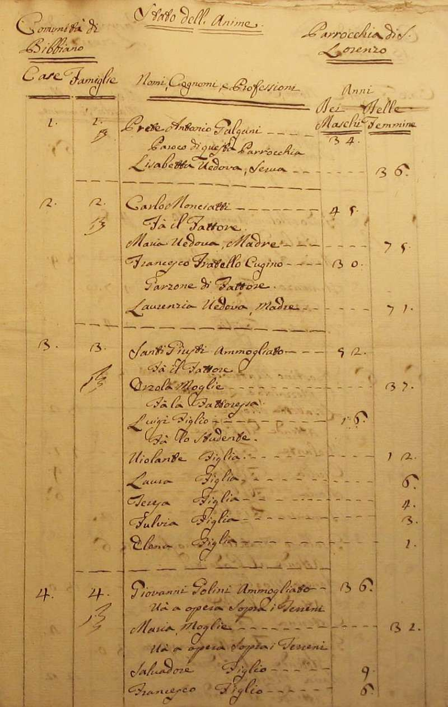
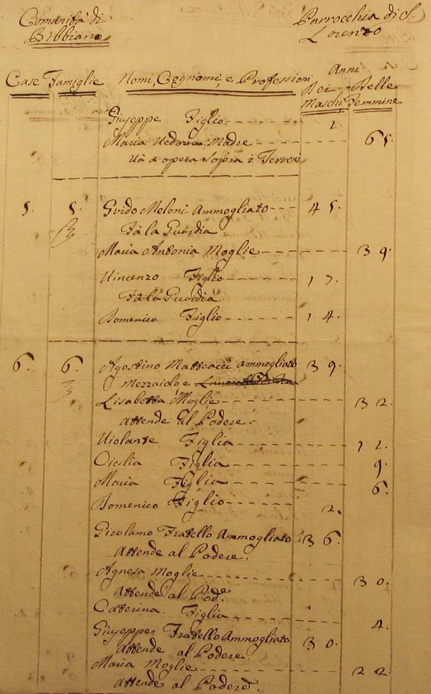
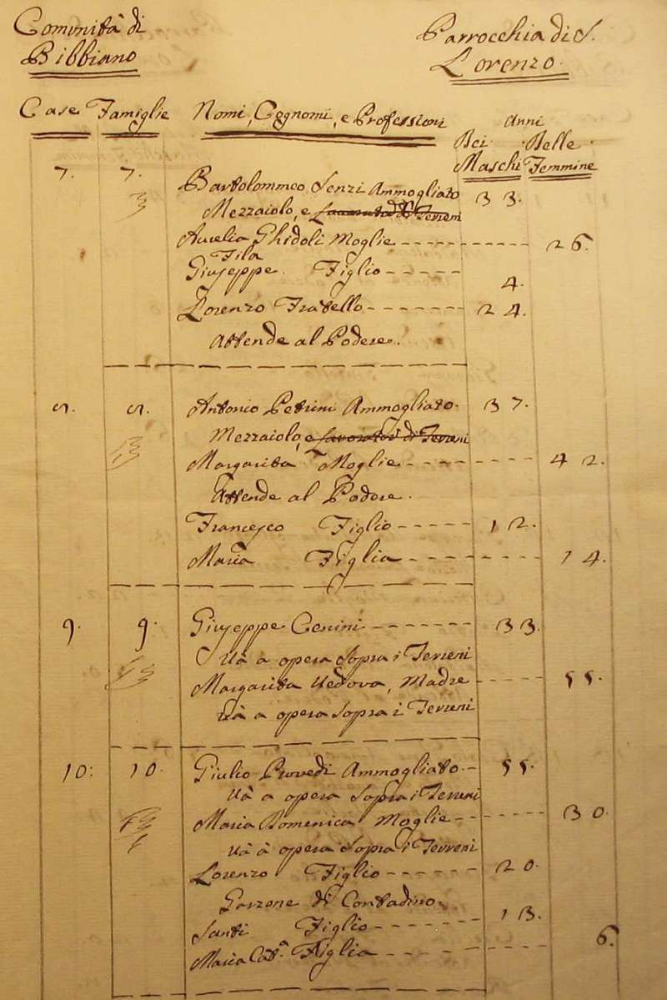
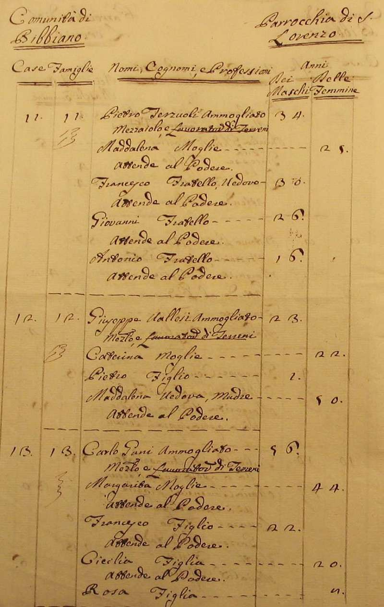
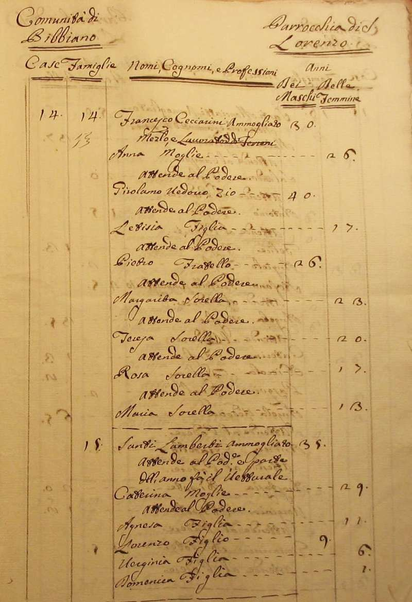
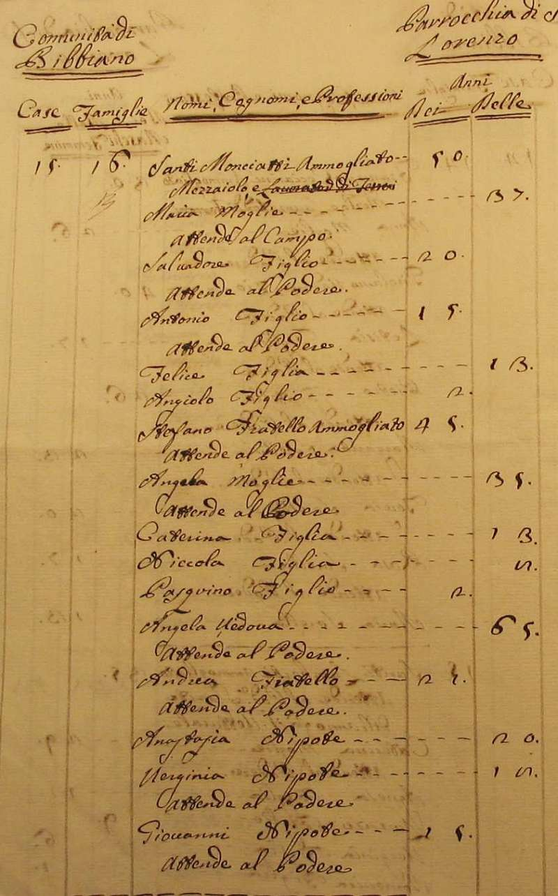
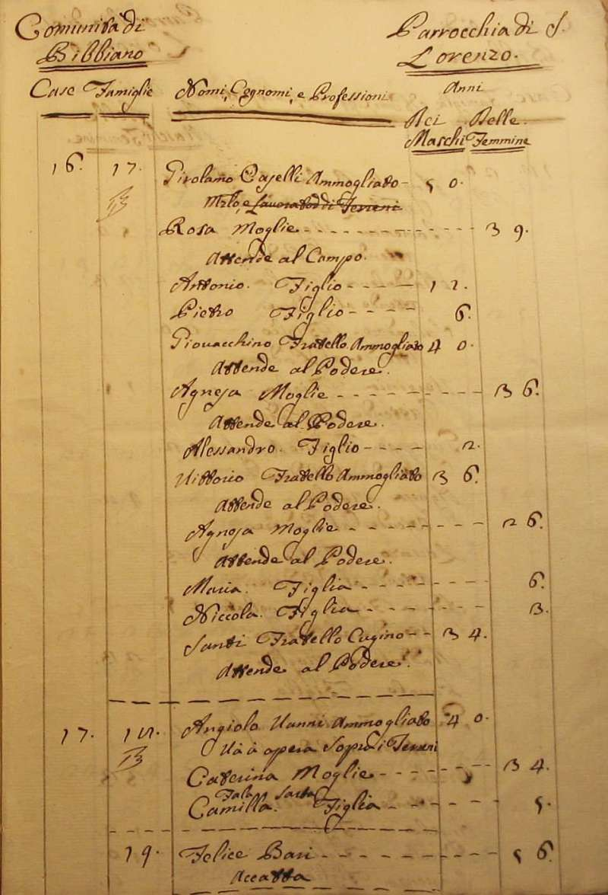
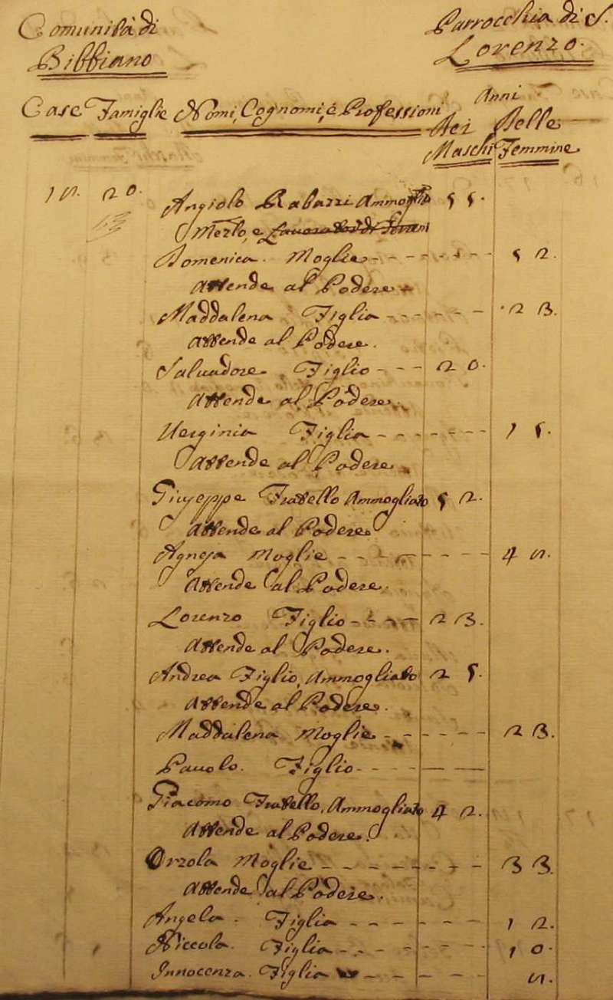
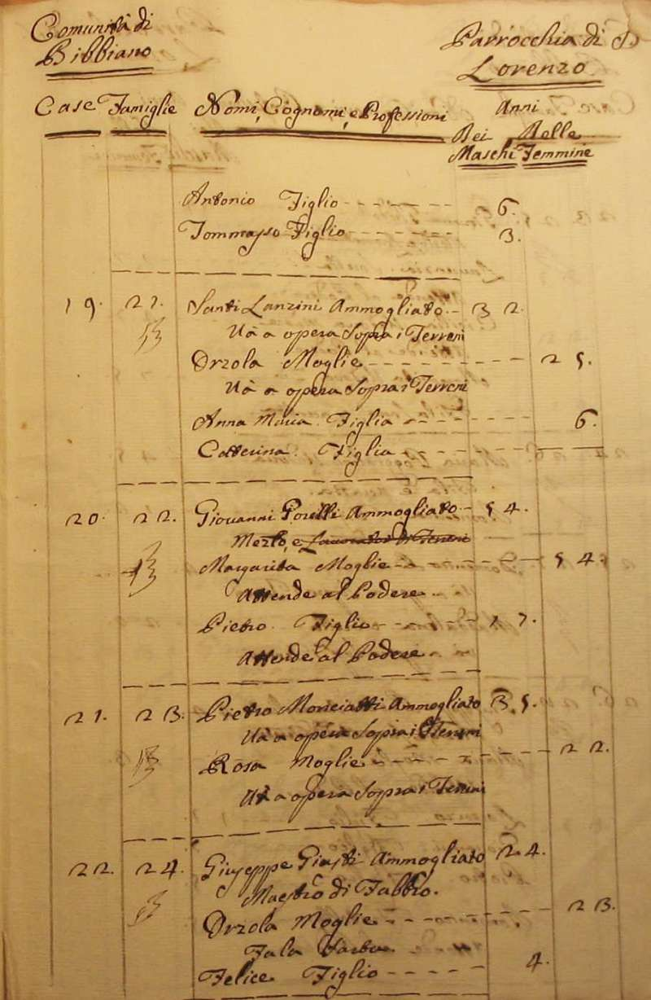
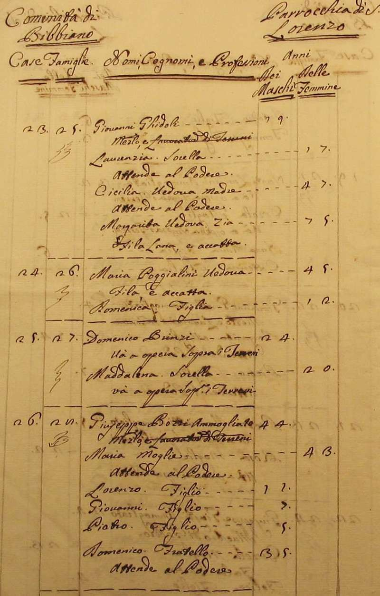
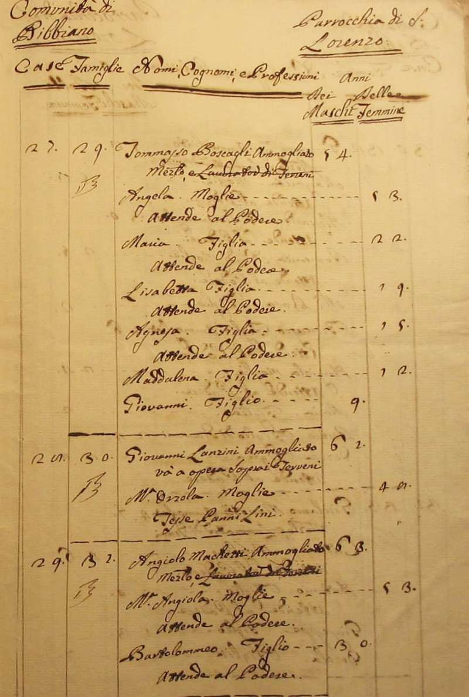
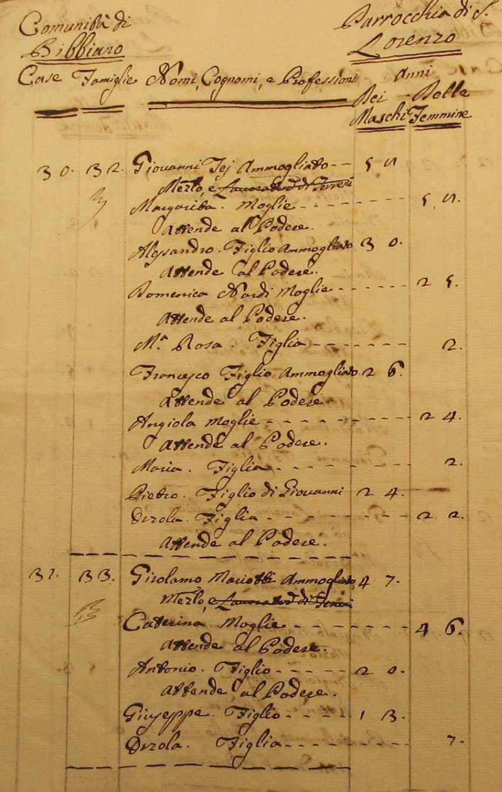
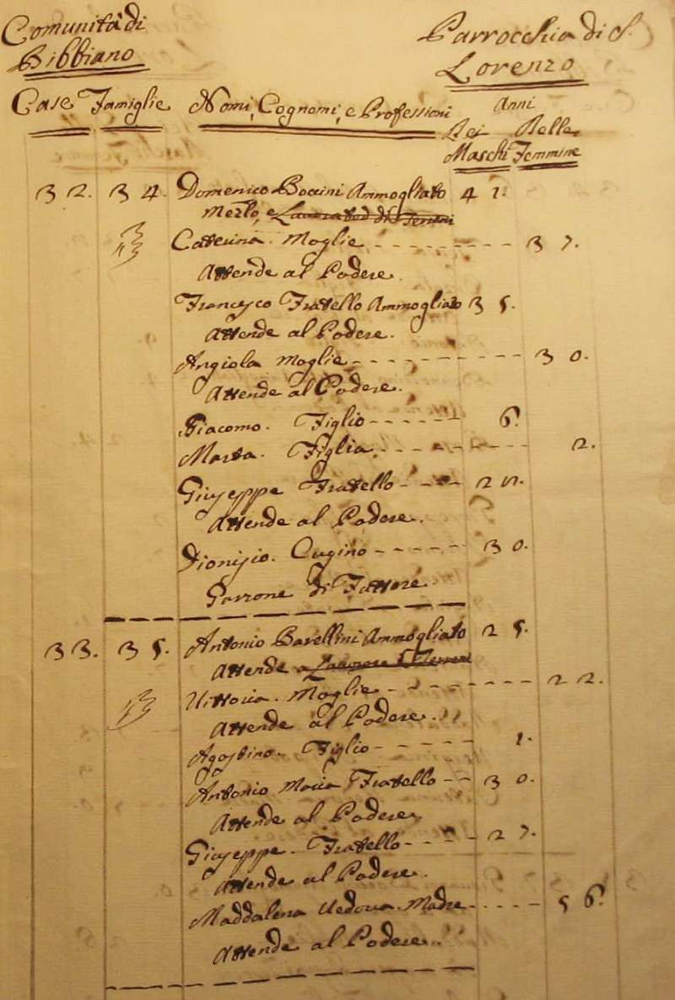
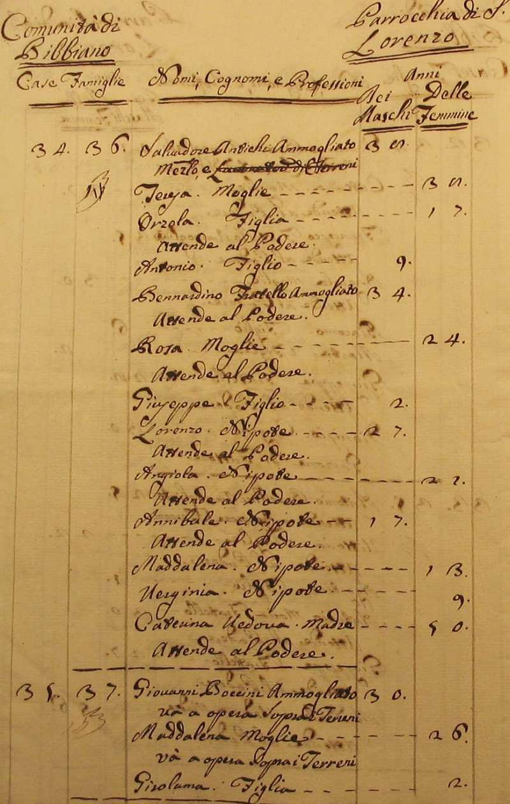
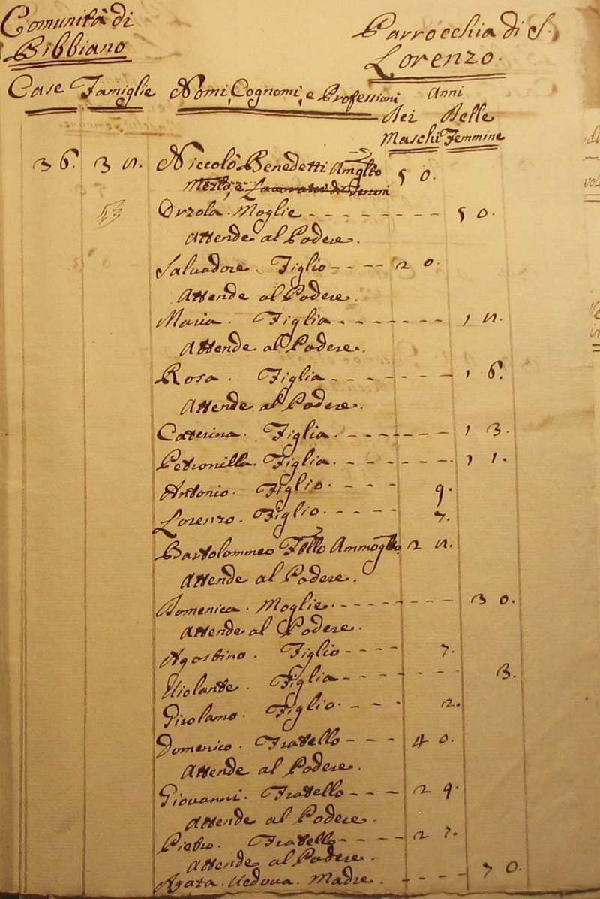
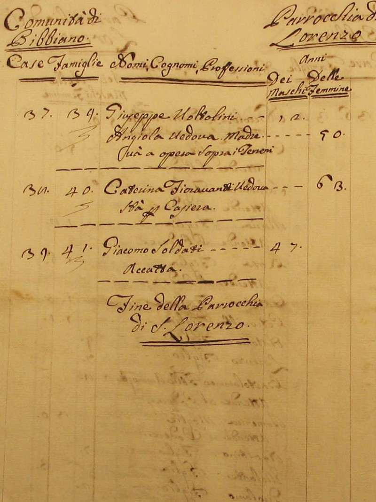
Torna ad inizio pagina
Ritorna all'indice delle parrocchie
| |

|